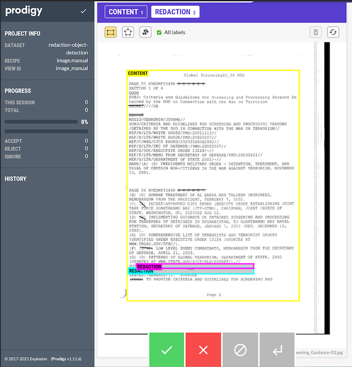
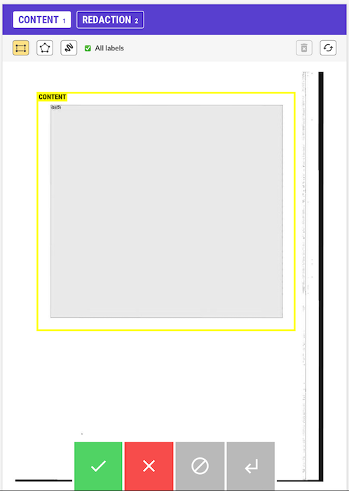
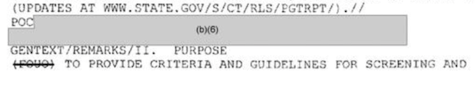

I’m back to working on the redaction model, though this time with a slightly more focused objective: object detection.
Object detection is when you put bounding boxes around the specific object that you are trying to locate within an image. The end goal for my project is to be able to identify — for an arbitrary image — which parts of the image are redacted, and then to be able to calculate what proportion of the image is redacted.
For this, I need annotations. Annotations are the data that I will use as the fuel for the model I hope to train. We need a lot of annotations of specific redactions in order for the computer to be able to learn to detect what is a redaction and what is just an empty box, for example.
I showed in an earlier post how I trained a model to detect whether there was any kind of redaction inside an image (to around 95% accuracy). For this next stage, it isn’t enough to offer a binary ‘yes’ or ‘no’ for whether it has been redacted. I need to specify the coordinates of a bounding box which encompasses each redaction.
In terms of the final output of the annotations, there are two main ways that this could go. I could either:
- get
xandycoordinates for the centre of the bounding box, and then a height and a width of the box around this centre point - get the four coordinates for each of the corners of the bounding box.
The COCO dataset format will eventually want datasets in the second format, but Prodigy has its own way of storing the data which I just left for now. Once I have a better handle on the annotation flow I will write a custom recipe which will save the data in exactly the format that I want. For now, it’s good enough.
Installing Prodigy into your development environment is a breeze now that you can do it with pip:
pip install prodigy -f https://XXXX-XXXX-XXXX-XXXX@download.prodi.gy # where the XXXs are your license codeGetting going with the image training was as easy as the following CLI command:
prodigy image.manual redaction-object-detection /path/to/image/data --label CONTENT,REDACTION --remove-base64Note that the --remove-base64 is to ensure that Prodigy doesn’t store the raw binary image data inside the database alongside the annotations. Prodigy (and their sister tool Spacy) is a little more focused on textual data, where storing the original data alongside the annotation doesn’t pose too much of an issue, but for image files this probably is a bit of an anti-pattern and could lead to a very large database.
You get a local URL to go visit and you see an interface where you can make the necessary annotations:

You can see that I am distinguishing between two different classes: redactions and content. Redactions are what we’ve been talking about above. Content, however, is a bounding box for the content on a page. Remember that at the end of all of this we want a percentage of the page that has been redacted. Some images have reduced sized images, where the actual content which could have been redacted only takes up half of the A4 page. If that whole section was redacted, I’d want a final amount closer to 100% for that image rather than the 50% I’d get if I just went with the total percentage of redacted pixels on the whole image file.
Doing a few annotations, I ran into a couple of issues almost immediately. What do I do with a page like this:

The whole text of the page is annotated, but the text only extended half-way down the page. There was only 50% of the page that could have been redacted, but should the content boundary box encompass more of the page, or just the only full-section redaction?
And for the following image, what is the right way to think about how to make the annotation?

This redaction encompasses multiple lines, so to some extent it doesn’t make a difference whether we have overlapping annotations or two adjoining boundary boxes. But for the purposes of training our model, will this contribute to a less accurate model? Should I be using polygon boundaries (which Prodigy can also use for annotations)?
{% include info.html text=“As an aside, this is why annotating your own data is so valuable. You get to see the limits of the annotations, and you get to really own the decisions that are being made. It is a bit early for me to know which approach is the best solution to these two problems, but being aware of them is important.” %}
Once we’re done with our annotations, we can easily export our data to a jsonl file with the following CLI command:
prodigy db-out redaction-object-detection > ./redaction-object-detection-annotations.jsonlThis gives us a file containing all our annotations. A sample for one image gives the idea:
{
"image": "sample/path/redacted/04-F-0269_Global_Screening_Guidance-03.jpg",
"text": "04-F-0269_Global_Screening_Guidance-03",
"meta": { "file": "04-F-0269_Global_Screening_Guidance-03.jpg" },
"path": "sample/path/redacted/04-F-0269_Global_Screening_Guidance-03.jpg",
"_is_binary": false,
"_input_hash": 1413334570,
"_task_hash": 1588323116,
"_view_id": "image_manual",
"width": 800,
"height": 1035,
"spans": [
{
"id": "0ef6ccd0-4a79-471d-9aa1-9c903c83801e",
"label": "CONTENT",
"color": "yellow",
"x": 76.5,
"y": 112.5,
"height": 786.1,
"width": 587.6,
"center": [370.3, 505.55],
"type": "rect",
"points": [
[76.5, 112.5],
[76.5, 898.6],
[664.1, 898.6],
[664.1, 112.5]
]
},
{
"id": "cd05d521-8efb-416b-87df-4624f16ca7f3",
"label": "REDACTION",
"color": "cyan",
"x": 80.3,
"y": 786.2,
"height": 20.2,
"width": 428.4,
"center": [294.5, 796.3],
"type": "rect",
"points": [
[80.3, 786.2],
[80.3, 806.4],
[508.7, 806.4],
[508.7, 786.2]
]
},
{
"id": "3e268e33-4eba-457d-8d17-8271a79ee589",
"label": "REDACTION",
"color": "magenta",
"x": 108.1,
"y": 772.3,
"height": 15.1,
"width": 400.6,
"center": [308.4, 779.85],
"type": "rect",
"points": [
[108.1, 772.3],
[108.1, 787.4],
[508.7, 787.4],
[508.7, 772.3]
]
}
],
"answer": "accept",
"_timestamp": 1638214078
}Everything we’re interested in is inside the spans attribute, and it actually contains both kinds of the annotation that I mentioned above.
As you can see, annotating images in this way is fairly painless, and it brings you in closer contact with your raw data which is an added bonus.